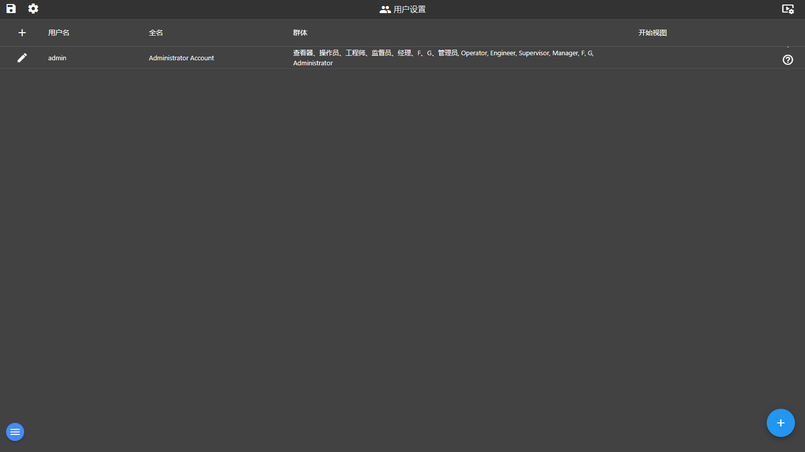

「系统」菜单进入用户管理页（/users），这也是全部系统管理页的枢纽：系统类页面顶部有保存（项目菜单）与设置两个按钮，点「设置」打开分组卡片式导航对话框，可跳转到设备与标签、脚本、通知、API 密钥、插件、角色、报表、标定、视频监控、Node-RED 流程、日志等所有管理页。首页右上角的演示工程按钮也在本章说明。

图 11-1 用户管理与设置导航（当前交付版实际截图）
| 区域 | 说明 |
|---|---|
| ① 用户表 | 列：用户名、全名、角色（启用角色权限时）或群体、开始视图（该用户登录后的起始画面）；列头可排序。 |
| ② 行操作 | 每行 ✎ 编辑用户；行尾 × 删除（内置 admin 账号不显示删除）。 |
| ③ 新建按钮 | 左上 + 与右下角悬浮 + 均可新建用户。 |
| ④ 用户编辑对话框 | 字段：用户名、全名、密码、授权组（查看器/操作员/工程师/监督员/经理等，空=对所有人授权）、角色、语言、起始视图。 |
| 分组 | 卡片（点击进入对应页面） |
|---|---|
| 用户接口 | 视图（编辑器）、布局、线形图、条形图、位置、AR 标记 |
| 杂项 | 连接（/device 设备与标签）、用户（/users）、角色（/userRoles）、插件（/plugins）、API 密钥（/apikeys）、资源 |
| 逻辑 | 警报（/messages）、通知（/notifications）、脚本（/scripts）、Node-RED 流程（/flows）、报告（/reports）、配方（/recipes）、视频墙（/video）、视频监控（/cameras）、标定（/calibrations）、语言（/language） |
| 系统 | 日志（/logs）、事件（/events）、设置（应用设置） |
| 页面 | 说明 |
|---|---|
| 设备与标签 | 设备列表（名称/地址/类型/轮询），支持 OPC UA、S7、Modbus、BACnet、Ethernet/IP、三菱 MELSEC、倍福 ADS、Redis、WebAPI、WebSocket、MQTT、GPIO 等类型；点「编辑设备标签」逐个配置 Tag（名称/地址/类型/最小/最大/单位等）。 |
| 脚本 | 脚本列表 + 脚本编辑器：编写 JavaScript，可设参数、运行模式（客户端/服务端）、权限与调度（按间隔或计划执行）。 |
| 通知 | 通知设置列表：名称、接收者、延迟（分钟）、间隔（分钟）、类型（警报/触发/访问-登录注销）、已启用；模式可选「通知所有新激活的报警」或「按优先级通知一条」。 |
| API 密钥 | 为第三方系统签发访问密钥。 |
| 插件 | 管理已安装的平台插件。 |
opc.tcp://[服务器]:[端口]，保存后即可添加标签。